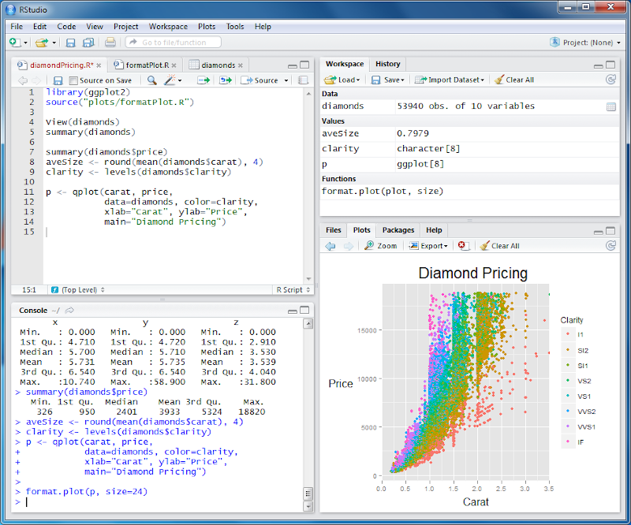
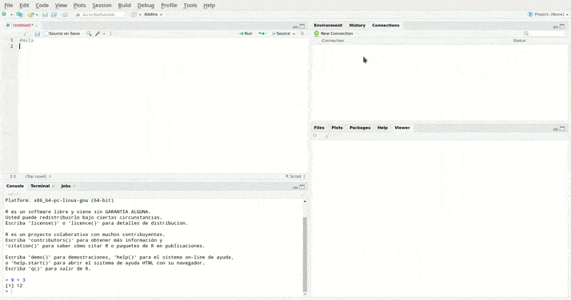

Primeros pasos con RStudio

RStudio es un entorno de desarrollo integrado (IDE) para el lenguaje de programación R, el cual puedes utilizar para realizar scripts de análisis de datos, aplicaciones web interactivas, documentos, reportes, gráficos y mucho más.
Para acceder o utilizar esta herramienta se tienen las siguientes opciones: RStudio Desktop y RServer. Cada uno de ellas tiene una en versión Open Source (código abierto) y otra Pro.
RStudio Desktop brinda acceso local a RStudio y tiene entre sus funcionalidades herramientas como resaltado de sintaxis, completado de código e indentación inteligente, te permite ejecutar el código R directamente desde el editor de fuentes, gestionar fácilmente múltiples directorios de trabajo usando proyectos, posee ayuda y documentación integradas de R.
Además, cuenta con depurador interactivo para diagnosticar y corregir errores rápidamente.
RStudio Server brinda acceso a RStudio a través de un navegador web, acerca el cálculo a los datos, permite hacer y tener de forma centralizada cálculos a escala y en la RAM. Cuenta con poderosas herramientas de codificación para mejorar la productividad.
También existe la posibilidad de trabajar con esta herramienta completamente online a través de RStudio Cloud una versión web de RStudio que te permite acceder a todas sus funcionalidades desde un buscador. Sin embargo, en este artículo nos centraremos en RStudio Desktop.
¿Cómo instalar RStudio Desktop?
- Debes instalar R (https://cloud.r-project.org/)
- Acceder a la web oficial de RStudio
- Ir a la sección Download https://rstudio.com/products/rstudio/download/ específicamente hasta "All Installers" cerca de la parte inferior de la página.
- Hacer clic en el enlace de descarga correspondiente al sistema operativo de su ordenador.
- Seleccionar el archivo descargado e instalar de acuerdo a su sistema operativo.
Ahora, Conozcamos la Interfaz de RStudio:
El ambiente de RStudio es similar en todas sus versiones. Por defecto está dividido en cuatro cuadrantes o regiones:

- El cuadrante superior izquierdo contiene una ventana que permite crear y editar scripts y, mostrar datos. También cuenta con una serie de comandos o botones asociados con la ejecución de los scripts. Lo podemos encontrar en algunas referencias como Source Panel. Es importante mencionar que si es la primera vez que abres RStudio este cuadrante no aparece hasta que se genere un nuevo script o se abra uno que ya haya sido generado previamente.

- El cuadrante inferior izquierdo contiene una consola, que recibe directamente las instrucciones y las interpreta. Luego de esto muestra el resultado. Por ejemplo, ingresamos 9 + 3 entonces la consola interpreta que debe hacer una suma y finalmente devolverá el número 7.
En este cuadrante también encontramos el Terminal y la funcionalidad Job que permite mantenerse productivo mientras tu código funciona: trabajos locales y trabajos remotos. Puedes usarlas para ejecutar tus scripts en segundo plano mientras sigues usando el IDE.

- En el cuadrante superior derecho podemos encontrar el Panel de Environment (ambiente), Historial y las Conexiones. Environment muestra las características de variables, dataframes u objetos que se estén trabajando en algún proyecto o sesión determinada. También hay un botón que permite cargar datos a la memoria de RStudio.
Por otro lado, en el Historial puedes ver las líneas de comandos que han sido ejecutadas recientemente, buscar mediante la caja de búsqueda o copiar los comandos directamente a la consola, o al script. Además es posible guardar el historial de comandos para utilizarlos en otra sesión.

- El cuadrante inferior derecho contiene varias pestañas:
-Files(Archivos): es un gestor de archivos propio de RStudio, te permite crear, editar y eliminar tus archivos, así como crear carpetas.
-Plots: en esta pestaña se muestran los gráficos que se generen a través del script o líneas de comandos. También te permite exportarlos en distintos formatos.
-Packages: Si damos clic en esta pestaña aparecen dos botones, install y update, seguido por una lista de paquetes que pueden estar o no instalados en tu ordenador y que puedes usar o instalar según sea el caso.
-Help: Nos da acceso a la ayuda que está compuesta por varias secciones,
*R Resources: Contiene una lista de enlaces que te dirigen a páginas web de las ayudas oficiales de R.
*RStudio: Contiene enlaces asociados a los sitios web oficiales de RStudio.
*Manuals: Esta sección contiene los enlaces que te permiten acceder de forma local a una serie de manuales a cerca de R.
*Reference: Hay dos enlaces, uno es el índice de los paquetes instalados y otro muestra una serie de palabras clave y la clasificación por tópicos de paquetes; al hacer clic en cualquiera de estos enlaces la información es cargada de forma local.
*Miscellaneous Material: Muestra material diverso sobre R, tal como manuales de usuario, preguntas frecuentes, Acerca de R, entre otros.
-Viewer: esta pestaña es complemento de la extensión RMarkdown, la cual permite tener una vista previa de los archivos .rmd.

Nota: Los cuadrantes se pueden agrandar o reducir. Permitiendo ajustar la pantalla a tus necesidades.

La barra de menú tiene opciones asociadas con los archivos, proyectos y carpetas, puedes crearlos, editarlos y/o eliminarlos (File), edición de código en el Source Panel o Consola (Edit), ejecución de código y scripts (Code), visualización y ajustes de las ventanas (View), herramientas asociadas a los gráficos generados (Plots), opciones asociadas con la sesión actual(Session), construcción (Build), depuración(Debug), Perfiles del usuario (Profile), herramientas para instalar paquetes, versiones y otros elementos asociados al terminal y (Tools), al igual que la pestaña help te permite acceder a una serie de materiales informativos de ayuda (Help).
Descargar e instalar paquetes
Para descargar e instalar uno o varios paquetes directamente desde RStudio debes dar clic en la pestaña packages específicamente en el botón install y escribir en la pantalla que aparecerá el o los nombres de los paquetes que deseas instalar. En el caso de que sea más de un paquete, los nombres de estos se deben escribir de forma tal que estén separados por un espacio o una coma.
También puedes descargar los paquetes desde R-cran e instalarlos desde RStudio.

Buscar o ubicar Tutoriales y material de apoyo sobre R y RStudio
La comunidad de R es bastante amplia, por tanto, tendrás acceso a una serie de contenidos educativos muy completos. En el ambiente de RStudio como se mencionó anteriormente, podemos encontrar la sección de ayuda en la cual hay diversos links o enlaces que te permiten acceder a estos sitios.
RStudio tiene una página web diseñada especialmente para al aprendizaje y enseñanza de R y RStudio. Tiene cuatro secciones principales: Un blog, aprende, enseña y certificate. Si eres completamente nuevo en R, la subsección Beginners https://education.rstudio.com/learn/beginner/ es ideal para ti.
Entre las recomendaciones en Beginners se encuentra un grupo de chicas de Sydney desarrollaron un blog y una serie de contenidos que pueden orientarte sobre el lenguaje R y la interfaz RStudio. Aquí el enlace: https://rladiessydney.org/.
Otro elemento web que puede ser útil es R-Básico. Un repositorio de información en Español sobre R y RStudio y de la cual se ha extraído información para este artículo.
Comentarios
Comments powered by Disqus